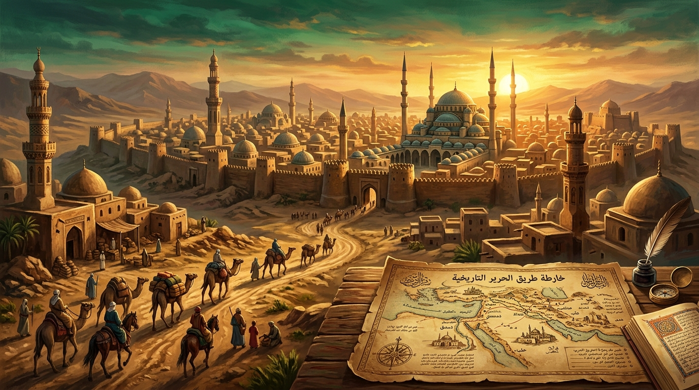

Civilisation & ʿUmrān
Comprendre la formation des sociétés, les dynamiques des États, la solidarité collective, l’économie et le changement historique.
💡 Les trois principes fondamentaux du parcours
Étudier les sociétés comme des réalités historiques
Les phénomènes sociaux et politiques obéissent à des lois naturelles et historiques observables, formalisées par la science de l'ʿUmrān.
Comprendre les cycles de pouvoir et de cohésion
La solidarité de groupe (ʿAsabiyya) est le moteur de la fondation des États, dont l'affaiblissement marque le début du déclin.
Observer les relations entre justice, économie et institutions
La prospérité matérielle et la pérennité d'une civilisation dépendent avant tout de la justice et de la protection des droits.
🏛️ Notions essentielles & repères intellectuels
Les concepts fondamentaux développés par les penseurs de ce domaine :
Al-ʿUmrān al-Basharī (La Civilisation)
La sociologie historique analysant la vie rurale, urbaine, politique et économique des sociétés humaines.
Al-ʿAsabiyya (La Cohésion Sociale)
Le lien de solidarité organique indispensable pour générer la force politique et bâtir un État.
Kharāb al-ʿUmrān (Ruine du Corps Social)
La loi sociologique démontrant que la tyrannie et la fiscalité confiscatoire détruisent l'économie et la société.
📚 Études et articles de référence

Ibn Khaldun et la naissance de la sociologie historique
Une analyse de la Muqaddima et de ses intuitions modernes sur les dynamiques des empires.
Lire l’étude →
Maximes et réflexions sur le destin des civilisations
Citations majeures sur l'histoire, la justice et la pérennité des institutions.
Lire l’étude →👥 Figures intellectuelles associées
Ibn Khaldūn
Fondateur de la Sociologie & de l'HistoireAuteur de la célèbre Muqaddima, génie visionnaire ayant formulé les lois sociologiques régissant les civilisations.
Al-Fārābī
Penseur de la Cité IdéaleA théorisé les structures d'organisation politique et la recherche du bien commun dans la cité vertueuse.